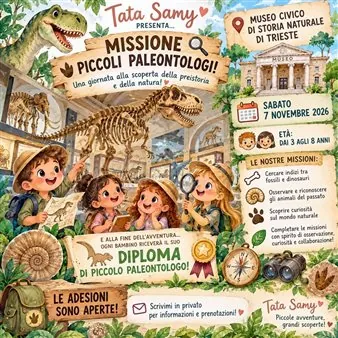

sab 7 nov · dalle 19:30
Al museo con Tata Samy
Questa volta Tata Samy vi porterà in un luogo davvero speciale, dove la natura racconta storie incredibili e ogni angolo nasconde una scoperta! Ma attenzione… non sarà una semplice visita al museo! MISSIONE PICCOLI ESPLORATORI Ogni bambino diventerà un piccolo investigatore…
 Indicazioni
Indicazioni
- Costi e prenotazioni
- Costo non indicato · Prenotazione non indicata
- Programma
- Programma da verificare. Apri la fonte ufficiale per orari e possibili aggiornamenti.
- In caso di maltempo
- Nessuna indicazione specifica pubblicata.
- Note
- Acquisito automaticamente dalla fonte.
L’EVENTO
Descrizione completa
Questa volta Tata Samy vi porterà in un luogo davvero speciale, dove la natura racconta storie incredibili e ogni angolo nasconde una scoperta!
Ma attenzione… non sarà una semplice visita al museo!
MISSIONE PICCOLI ESPLORATORI
Ogni bambino diventerà un piccolo investigatore della natura e, attraverso divertenti missioni, andrà alla scoperta di: Carlotta, il grande squalo del museo! Meravigliose farfalle e curiosissimi insetti! Animali provenienti da ambienti diversi, da osservare e conoscere! Pesci e creature del mondo acquatico! Fossili, dinosauri e misteri della preistoria! Ogni missione sarà un’occasione per osservare, fare domande, ragionare, collaborare e soprattutto… MERAVIGLIARSI!
E alla fine dell’avventura?
Ogni piccolo esploratore riceverà il suo personale DIPLOMA DI PICCOLO PALEONTOLOGO, un ricordo speciale della giornata!
Esperienza adatta a bambini dai 3 agli 8 anni.
È richiesta l'adesione anticipata contattando Tata Samy tramite i canali social ufficiali come il Profilo Instagram di Tata Samy Trieste TgQPHd|||[] TgQPHd|||[[[null,null,null,null,null,null,[[1793118000485853,117623587,2283763093],null,null,null,null,[[2,0,0,11]]],"https://www.instagram.com/tatasamy_trieste_/"],0,0],"\u0026NS7V1c_2i:u9afN","\u0026NS7V1c_2i:kEV45c"] TgQPHd|||[["https://www.instagram.com/tatasamy_trieste_/",null,null,[null,null,null,null,null,null,null,null,null,null,null,null,null,null,null,[{"1218":[16,null,null,null,[1]]}]],16,null,"TATA SAMY (@tatasamy_trieste_) - Instagram","... TATA SAMY PRESENTA… MISSIONE PICCOLI PALEONTOLOGI! ✨ Il mistero è finalmente svelato! Museo Civico di Storia Naturale di Trieste Sabato 7 novembre 2026 Età: dai 3 agli 8 anni Questa non sarà una semplice visita al museo… ma una vera spedizione alla scoperta della natura e della preistoria! I nostri piccoli esploratori dovranno affrontare divertenti missioni: Cercare indizi tra fossili e dinosauri Osservare e riconoscere gli animali del passato Scoprire curiosità sul mondo naturale Completare le missioni con spirito di osservazione, curiosità e collaborazione! E alla fine dell'avventura? Ogni bambino riceverà il suo DIPLOMA DI PICCOLO PALEONTOLOGO!","https://encrypted-tbn0.gstatic.com/images?q\u003dtbn:ANd9GcTWZcfTlMk_IExDVyHXZtrfpjUFHpb547pA2tQWVI3VKvv3vdm4EhHVNicp-gkDgNcxUwllVHi7E6WB66Q","Instagram","https://encrypted-tbn1.gstatic.com/faviconV2?url\u003dhttps://www.instagram.com\u0026client\u003dAIM\u0026size\u003d128\u0026type\u003dFAVICON\u0026fallback_opts\u003dTYPE,SIZE,URL",[[1793118000485853,117623587,2283763093],null,null,null,null,[[2,0,0,11]]],null,"0751d777-94a0-462d-88b6-9f9001137cc5"]] o il gruppo Facebook dedicato.
IL PROGRAMMA
Programma e orari
Appuntamenti raccolti dalle fonti elencate. Dove manca un orario, non è ancora disponibile in questa scheda.
Programma pubblicato
- Dal 2026-11-07 al 2026-11-07
INFORMAZIONI UTILI
Prima di partire
- Controllare la fonte prima di partire.
ORGANIZZAZIONE